보리스는 동료에게 말하듯 시켜요
영상은 숫자 하나로 시작해요. Anthropic이 클로드 코드의 시스템 프롬프트를 80% 넘게 지웠는데도 코딩 평가 점수가 거의 떨어지지 않았다는 거예요. 만든 쪽도 지시를 줄였으니, 쓰는 쪽도 프롬프트를 길게 꾸밀 이유가 줄어요.
보리스가 챙기는 세 가지
클로드 코드를 만든 보리스 체르니가 프롬프트에서 챙기는 건 세 가지예요. 아래 화면의 메모지(할 일), 다이얼, 'PASS', 'FAIL' 카드가 각각 이 셋을 가리켜요.
- 무엇을 — 무엇을 하길 바라는지
- 얼마나 — 얼마나 공을 들이길 바라는지
- 확인 — 제대로 했는지 어떻게 확인할지
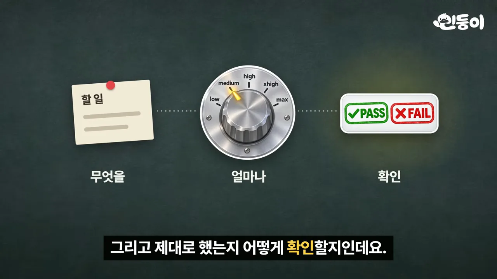
보리스가 실제로 쓴 프롬프트
보리스가 공개한 프롬프트는 팟캐스트 Acquired의 Home Depot 편을 들으며 함께 볼 웹페이지, 즉 아티팩트를 만들어 달라는 요청이에요. 아래 화면이 그 영어 원문이에요. 에피소드 전체를 따라가며 들려주고, 예쁘고 눌러 볼 수 있게 만들고, 곳곳의 사업 지혜를 전하는 데 집중하라고 해요. "토큰은 많이 써도 되니 네가 자랑스러울 때까지 다듬어 줘"라는 문장이 공들일 정도를 정해 줘요.
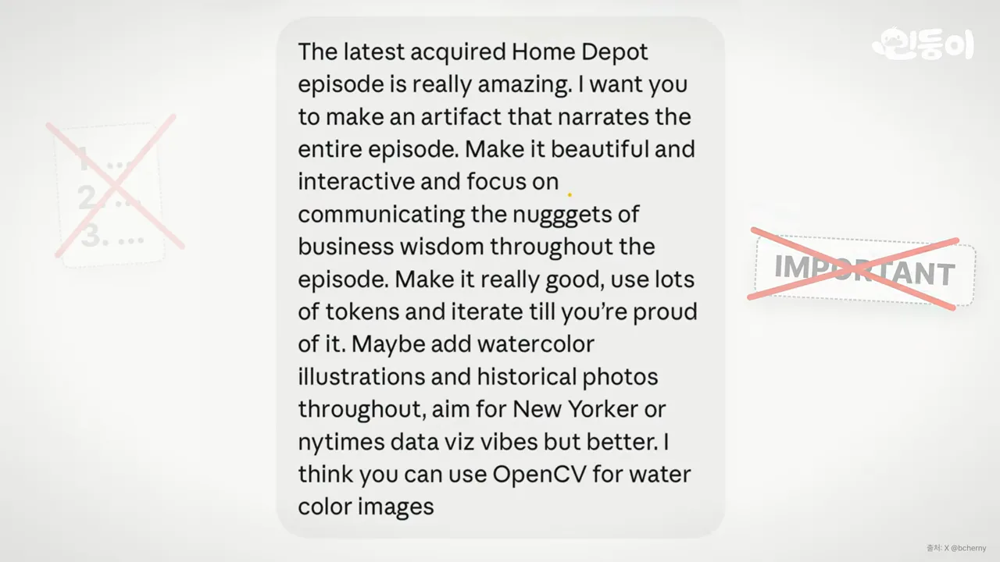
영상의 한국어 번역은 수채화 삽화와 옛날 사진 부분까지만 읽어요. 화면의 원문 끝에는 두 문장이 더 있어요. 'New Yorker나 NYT 데이터 시각화 느낌을 노리되 더 낫게', 그리고 '수채화 이미지는 OpenCV로 만들 수 있을 것 같다'예요. 영어 원문에는 nugggets 같은 오타도 그대로 남아 있어요.
눈여겨볼 건 '수채화 삽화를 넣으면 좋겠다'처럼 선택을 남겨 둔 말투예요. 보리스는 Opus 5.5가 알아서 좋은 판단을 할 거라고 믿는다고 했어요.
카파시도 짧게 써요
안드레이 카파시도 비슷한 말을 했어요. 아래는 그가 Hacker News에 단 댓글이에요. 노랗게 칠한 첫 문장이 '모델이 내 의도를 알아들어서 프롬프트가 점점 짧고 단순해진다'는 뜻이에요. 지시를 너무 많이 주면 모델이 더 나은 방법을 찾지 못하게 막을 수 있다는 거예요.
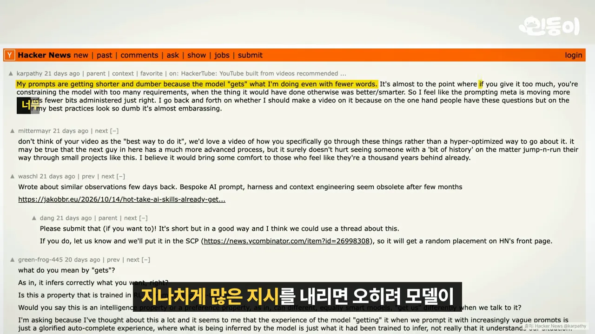
무엇을: 클로드가 모르는 정보를 채워요
영상은 동료에게 말하듯 시키라고 했지만, 필요한 설명까지 빼라는 뜻은 아니라고 짚어요. 동료에게 일을 맡길 때도 지금 어떤 상황이고 왜 필요한지 말해 주잖아요.
클로드 코드 공식 문서의 예시가 그 차이를 보여 줘요. 아래 화면의 왼쪽 열이 피할 말, 오른쪽 열이 대신 쓸 말이에요.
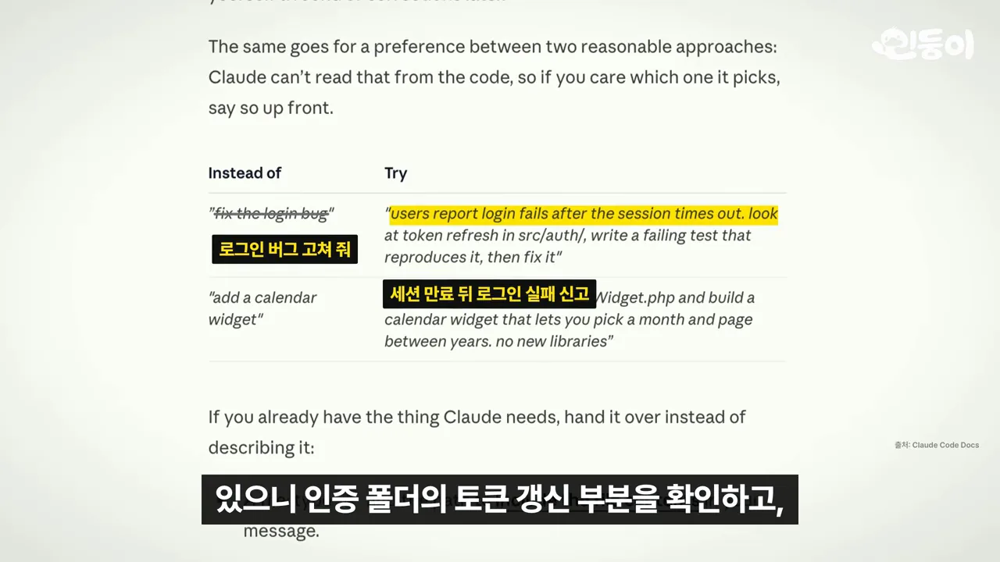
| 이렇게 말고 | 이렇게 |
|---|---|
| 로그인 버그 고쳐 줘 | 세션이 만료된 뒤 로그인이 실패한다는 신고가 있어. 인증 폴더의 토큰 갱신 부분을 보고, 문제를 재현하는 테스트부터 쓴 다음 고쳐 줘 |
결국 내가 아는 상황과 클로드가 아는 정보 사이의 틈을 줄이는 게 핵심이에요.
큰 작업이면 작업 지시서 일곱 칸
웹사이트를 통째로 만드는 것처럼 큰 작업이면 알려 줄 게 더 많아요. 영상은 작업 지시서에 들어갈 일곱 칸을 하나씩 채워 보여 줘요. 아래는 일곱 칸이 다 체크된 모습이에요. 2번 옆의 '마음에 드는 예시' 카드는 참고할 결과물이 있으면 같이 주라는 뜻이에요.
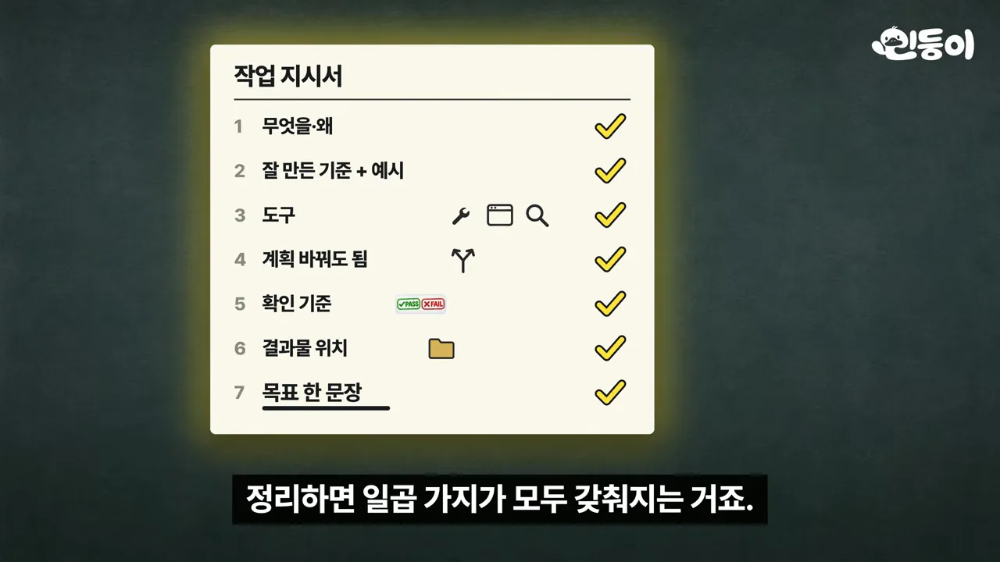
지시서는 클로드에게 물어서 만들어요
이걸 직접 다 쓸 필요는 없어요. "내가 원하는 결과를 구체적으로 정리할 수 있게 질문해 줘"라고 하면 클로드가 물어 가며 지시서를 만들어 줘요. 아래 화면에서 클로드가 "누가 쓰는 결과물인가요?", "꼭 있어야 하는 기능은요?"를 묻고, 사용자가 '동네 빵집 손님들이 쓰는 주문 사이트', '온라인 주문이랑 카드 결제'로 답해요. 오른쪽 작업 지시서.md에 목표, 쓰는 사람, 필요한 기능, 완성 기준이 채워져요.
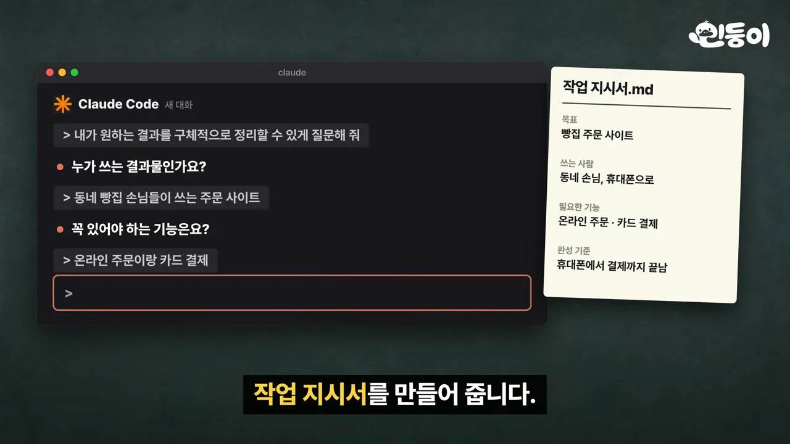
질문으로 요구 사항을 구체화해 주는 grill-me 같은 스킬을 써도 돼요. 지시서가 완성되면 새 세션에 그 문서를 주고, 바로 시작하기 전에 계획부터 보여 달라고 해요.
얼마나: 문구 대신 에포트로 정해요
예전에는 프롬프트에 "단계별로 생각해", "꼼꼼하게 해" 같은 말을 넣었어요. 이제는 에포트를 직접 정해 생각의 깊이를 조절하는 게 좋다고 해요. 모델마다 지원하는 단계가 다르고, Opus 5.5는 다섯 단계예요. 아래 화면은 공식 문서의 에포트 표예요. 왼쪽 열이 단계 이름, 오른쪽 열이 어울리는 일이에요.
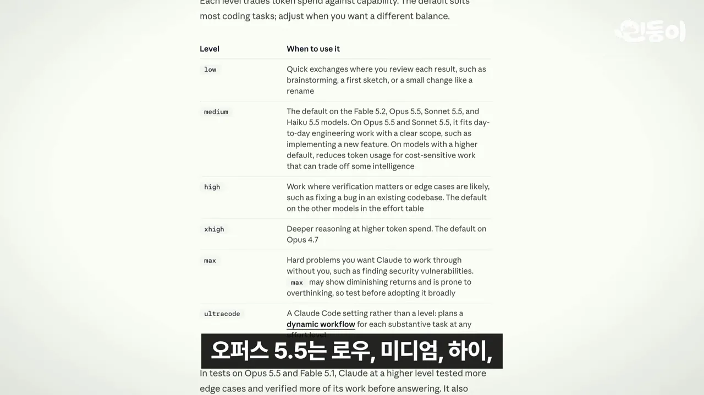
기본값은 medium이에요. 낮을수록 대체로 답이 빨리 나오고 토큰도 덜 써요. 영상이 정리한 단계별 쓰임은 이래요.
| 단계 | 어울리는 일 |
|---|---|
low | 이메일 다듬기처럼 빠르게 주고받는 작업 |
medium (기본값) | 새 기능 만들기처럼 범위가 분명한 보통 작업 |
high | 내가 안 쓴 코드의 버그 고치기처럼 놓치기 쉬운 게 많을 때 |
xhigh | 그보다 더 복잡한 문제 |
max | 사람이 끼지 않고 클로드 혼자 끝까지 풀어야 하는 어려운 문제. 필요 이상으로 오래 생각할 수 있어요 |
내가 얼마나 끼어들지로 고르기
클로드 코드 팀의 타릭 시히파는 작업에 얼마나 직접 관여하고 싶은지로 에포트를 골라요. 아래 화면 위쪽(에포트 낮음)은 눈 모양이 여러 번 찍혀 있어요. 결과가 빨리 나와 중간중간 방향을 확인할 수 있다는 뜻이에요. 아래쪽(에포트 높음)은 깃발까지 한 번에 가요. 더 깊이 생각하는 대신, 깃발이 '의도'에서 비켜 꽂힐 수 있어요.
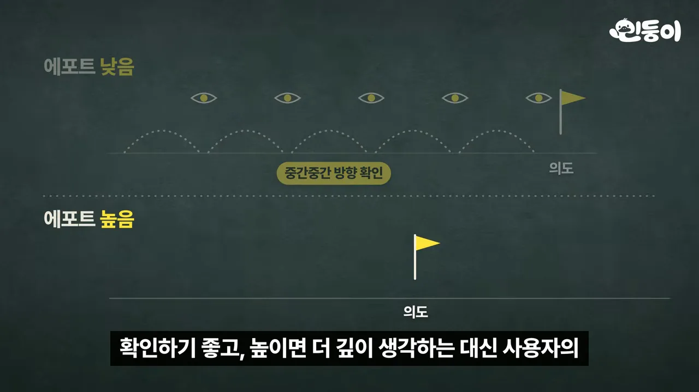
그래서 타릭은 단계마다 에포트를 바꿔요. 아래 그림은 영상이 소개한 그의 순서를 옮긴 거예요.
아래 화면은 타릭의 글에서 이 순서가 적힌 부분이에요. 노랗게 칠한 네 줄이 위 그림의 네 칸과 같아요.
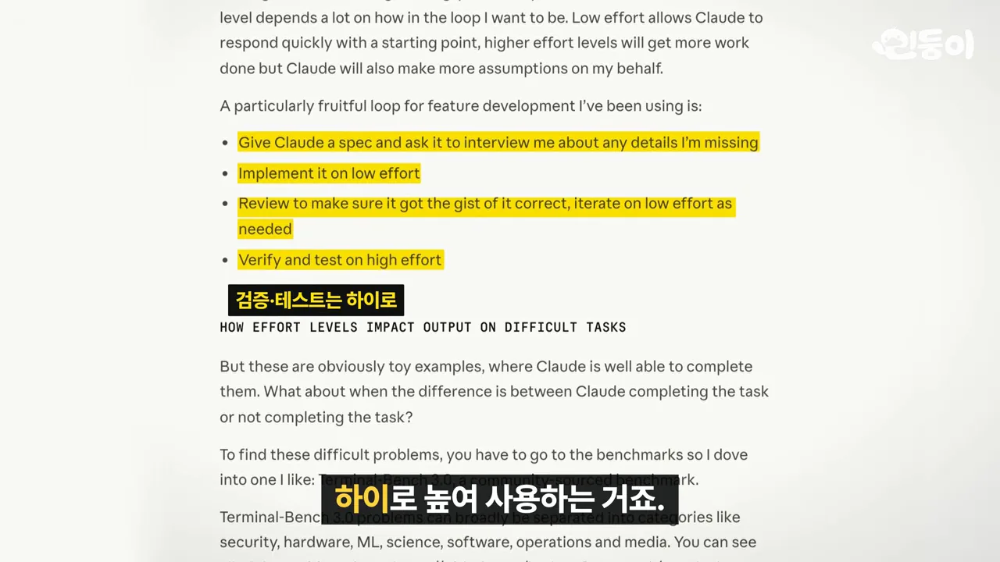
확인: 통과·실패가 갈리는 검사를 줘요
에포트를 올린다고 결과가 꼭 정확해지는 건 아니에요. 앞의 로그인 버그 예시에서 테스트부터 쓰게 한 것도 그래서예요. 프롬프트 끝에 "확인해"라고만 적지 말고, 실행하면 통과인지 실패인지 갈리는 검사를 줘야 해요.
아래 화면이 검사가 있을 때 클로드가 도는 고리예요. 코드 고치기 → 테스트 실행 → 실패면 다시 수정으로 돌고, 통과하면 오른쪽 'PASS' 카드로 빠져나가요.
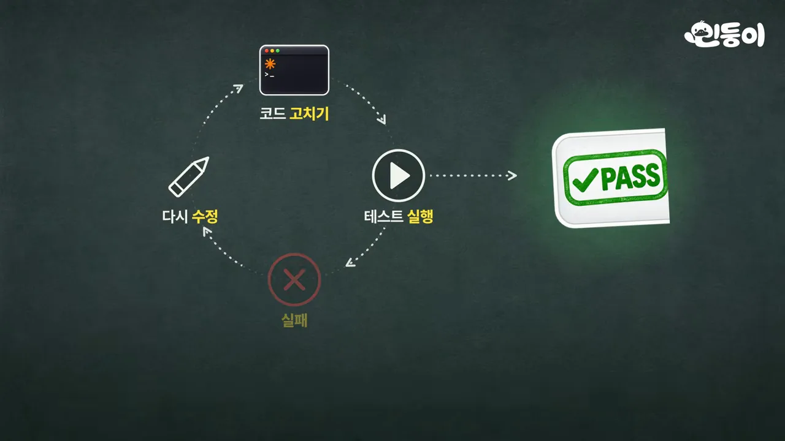
이때 "테스트 다 통과했어요"라는 말만 믿지 말고, 어떤 테스트를 돌렸고 결과가 어땠는지 증거까지 보여 달라고 해요.
코딩이 아닌 일도 같아요. 문서 수정이면 요청한 수정이 모두 반영됐는지, 보고서면 숫자가 원본 자료와 맞는지처럼 결과를 분명하게 가를 기준을 줘요. 그리고 항목마다 통과한 근거를 보여 달라고 하면 돼요.
막연한 "다시 확인해"는 빼요
영상은 Anthropic의 Opus 5 안내서를 보여 줘요. 아래 화면의 'Task scope and over-verification' 단락이에요. 첫 문장이 'Opus 5는 시키지 않아도 스스로 검증한다'예요. 그래서 "마지막에 다시 확인해" 같은 막연한 검증 지시를 넣으면 검증을 쓸데없이 되풀이하며 토큰만 더 쓴다고 해요.
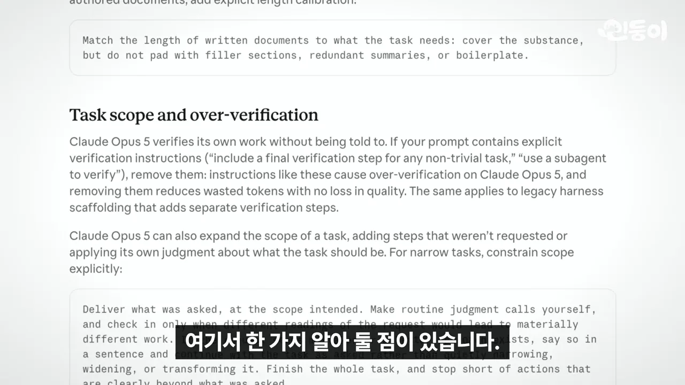
중요한 일은 새 세션에 리뷰를 맡겨요
중요한 작업이면 클로드 코드 세션을 하나 더 열어 리뷰를 맡겨요. 새 세션은 결과물이 만들어진 과정을 보지 않아서, 처음 세션이 놓친 문제를 다른 관점에서 찾아요. 아래 화면 오른쪽이 리뷰 세션이고, 거기서 나온 지적을 원래 세션에 넘겨 고쳐요.
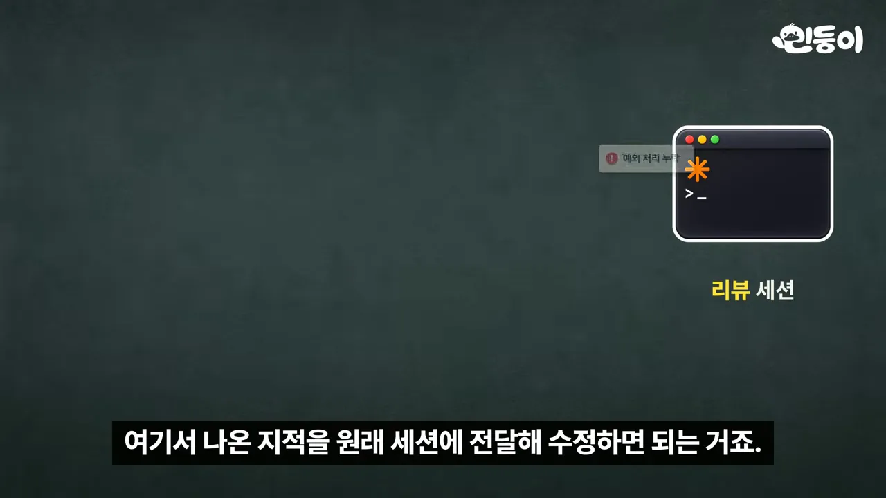
영상 화면은 이런 억지 지적의 예로 '변수 이름 취향'을 들어요. 공식 문서도 '두 번째 세션은 가장 쉽게 얻는 독립 리뷰어'라고 하면서, 지켜보지 않은 세션이 리뷰하고 그 결과를 첫 세션에 붙여 넣는 방식을 소개해요.
반복은 CLAUDE.md와 스킬로 남겨요
지금까지는 일을 맡기고 결과를 확인하는 방법이었어요. 마지막은 같은 설명을 매번 되풀이하지 않는 방법이에요. 영상은 지시가 놓일 자리를 네 군데로 나눠요. 아래 그림이 그 정리예요.
CLAUDE.md는 200줄 아래로
매번 알려 줘야 하는 지시는 CLAUDE.md에 적어요. 다만 다 넣지 말고 기본 지시와 필요한 자료가 있는 파일 위치만 남기고, 자세한 건 별도 파일로 빼요. 아래 화면은 공식 문서에서 '파일 하나당 200줄 아래'를 권하는 줄이에요. 세션을 시작할 때마다 읽는 파일이라, 길어질수록 중요한 지시를 놓칠 수 있어요.
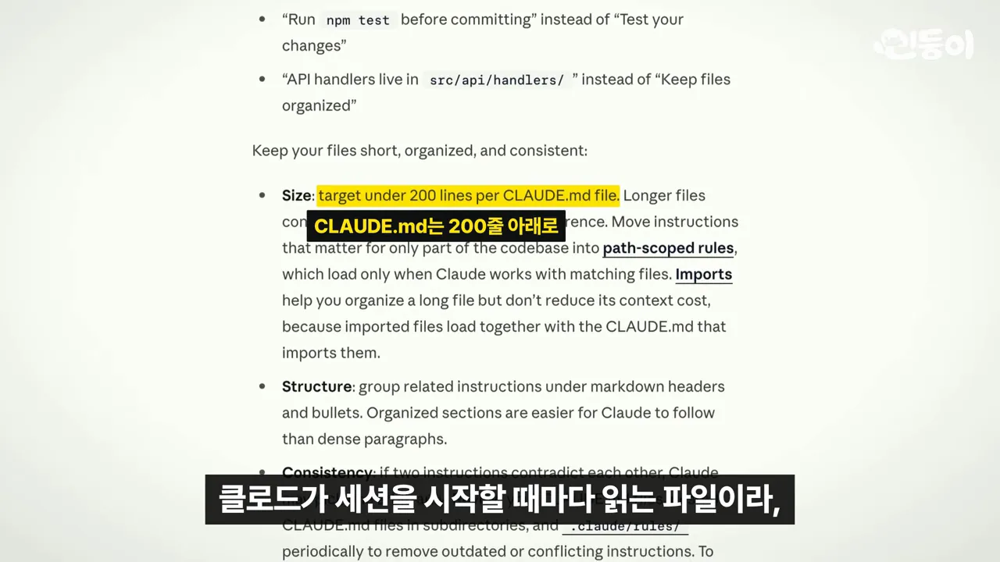
그럼 무엇부터 줄일까요? 영상은 두 가지를 꼽아요.
- '중요', '절대'로 강조한 지시. 예전 모델은 지시를 자주 놓쳐서 강조가 필요했지만, 지금은 평범하게 써도 잘 따라요. 오히려 과하게 강조하면 그 규칙을 지나치게 적용할 수 있어요.
- 코드만 읽어도 알 수 있는 내용. 코드 구조나 파일 위치는 클로드가 저장소를 직접 확인해요.
아래 화면은 공식 문서의 '이제 그만해도 되는 것' 표예요. 두 번째 줄이 IMPORTANT나 대문자 강조이고, 오른쪽 설명에 'piling on emphasis'(강조를 쌓으면)가 노랗게 칠해져 있어요.
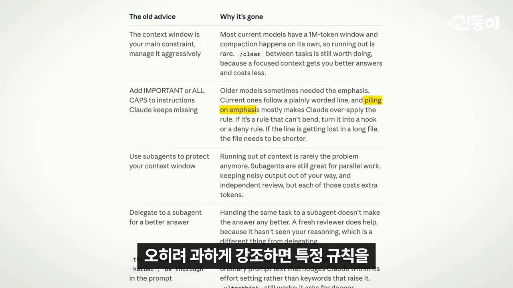
꼭 지켜야 하는 규칙이라면 강조하는 대신, 특정 상황에서 명령을 자동 실행하는 훅이나 금지된 행동을 막는 설정으로 옮겨요. 대신 CLAUDE.md에는 테스트 명령, 오해하기 쉬운 부분, 프로젝트에서 내린 중요한 결정처럼 코드만 봐서는 모르는 정보를 남겨요. 첫 섹션에서 말한 정보의 틈을 메우는 내용이에요.
점검은 한 줄로, 기억은 자동으로
뭘 줄일지 모르겠다면 /doctor prompt-audit 한 줄이면 돼요. 아래 화면의 'Audit your instruction files' 단락이에요. 기존 지시문에서 낡았거나 서로 충돌하는 내용을 찾아 줘요.
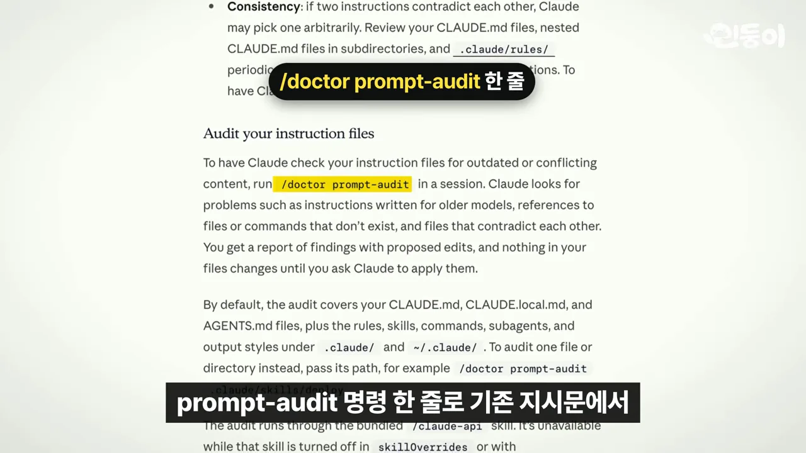
클로드 코드에는 자동 메모리도 있어요. 작업 중에 바로잡아 준 내용을 스스로 기록해 다음 세션에서도 참고해요. 아래 화면에서 세션 1에서 쓴 npm test가 '테스트는 npm test'라는 메모로 남아 세션 2로 넘어가요. 기본으로 켜져 있고, /memory로 저장 내용을 확인하거나 고치고 끌 수 있어요.
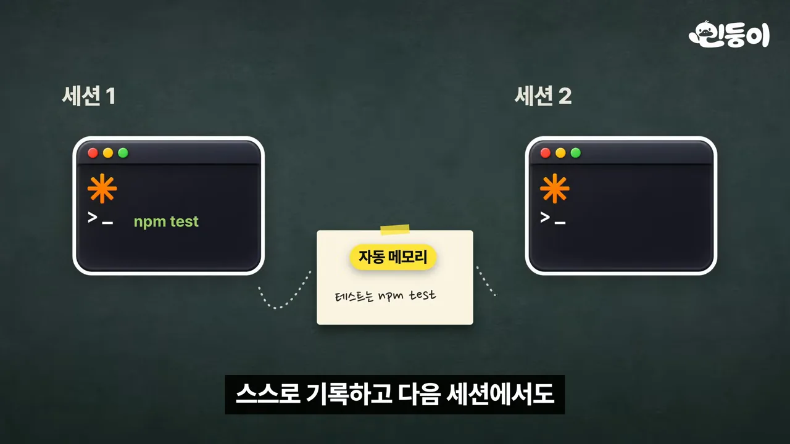
여러 단계 절차는 스킬로
작업 방법까지 CLAUDE.md에 다 적으면 파일이 다시 길어져요. 여러 단계로 된 절차는 스킬로 빼요. 스킬은 특정 작업에 필요한 지시를 모아 둔 것이고, 그 일을 할 때만 불러와요. 매주 고객에게 보내는 보고서나 팀의 코드 리뷰 방식처럼 같은 순서와 기준으로 되풀이하는 일이 대상이에요.
만들 때는 세 가지를 알려 주면 돼요. 어떤 작업을 언제 하는지, 어떤 순서로 하는지, 결과가 어떤 기준을 만족해야 하는지요. 아래 화면에서 SKILL.md의 첫 칸(시계 아이콘)이 노랗게 칠해져 있어요. '언제'를 분명히 적어야 클로드가 필요한 순간에 스킬을 불러온다는 걸 강조한 거예요.
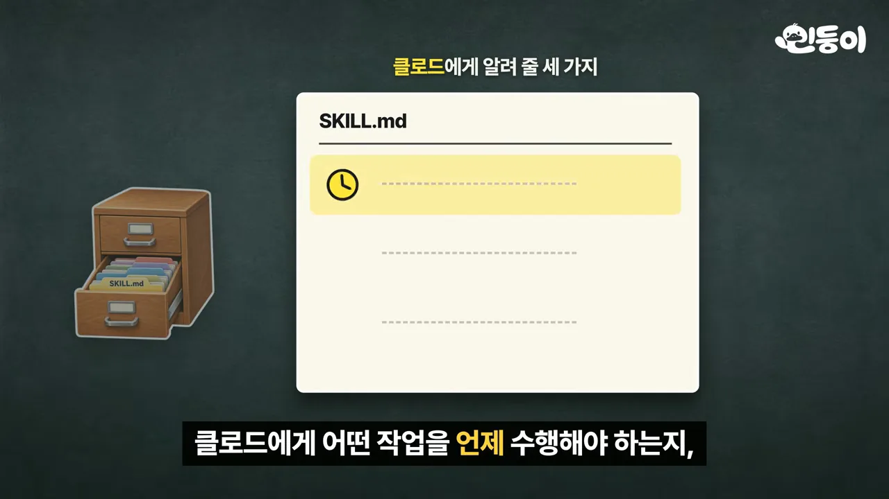
잘된 작업을 그대로 스킬로
더 쉬운 방법도 있어요. 앞의 방법대로 일을 맡겨 결과가 마음에 들면, 대화를 끝내기 전에 "방금 한 작업을 스킬로 만들어 줘"라고 해요. 클로드가 작업 과정과 수정한 내용을 참고해 스킬을 만들어서 절차를 처음부터 다시 설명할 필요가 없어요. 아래 화면은 영상이 보여 준, 이 방법이 적힌 Claude 문서예요. 노랗게 칠한 'Ask Claude A to create a Skill' 줄 옆에 '방금 한 분석을 스킬로 만들어 줘'라는 번역이 붙어 있어요.
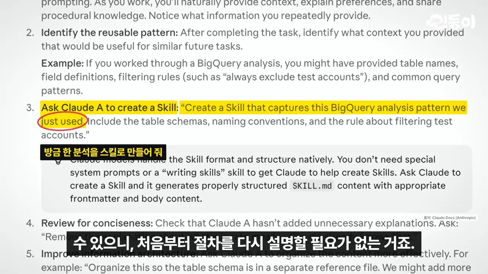
다음에 같은 일을 할 때 그 스킬을 쓰고, 결과가 아쉬운 부분은 고쳐서 스킬에 반영하면 돼요.
마무리
예전에는 규칙을 잔뜩 넣는 게 도움이 됐지만, 모델이 발전하면서 그런 규칙이 오히려 방해가 될 수 있어요. 영상의 결론은 문장을 꾸미기보다 세 가지에 집중하라는 거예요. 클로드가 모르는 정보를 알려 주고, 작업에 맞게 에포트를 정하고, 결과를 확인할 기준을 마련해요. 반복되는 지시는 CLAUDE.md에, 잘된 작업 방법은 스킬로 남겨요. 처음에 보리스가 말한 것처럼, 일 잘하는 동료에게 일을 맡기는 것과 크게 다르지 않아요.